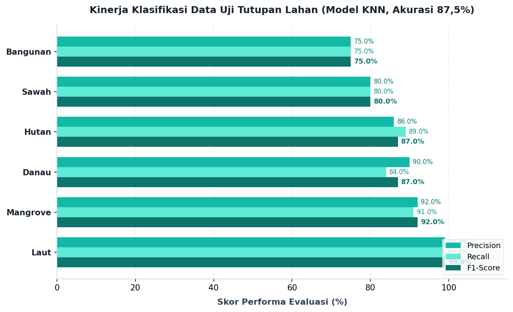
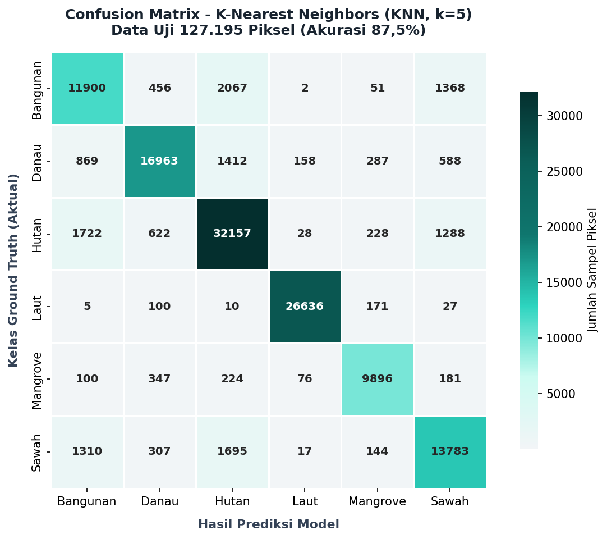

4. Visualisasi Map (Folium)#
Di tahap terakhir, kita memvisualisasikan kembali wilayah yang sudah kita digitasi ke dalam sebuah peta (interactive map).
Mengingat dataset berisi ratusan ribu titik piksel, me-render tiap titik satu-per-satu di peta interaktif akan membekukan (crash) memori browser. Solusi paling robust adalah menyatukan kembali titik-titik tersebut per poligon_id dan membuat jaring area (Convex Hull) luarnya, sehingga titik berubah menjadi hamparan wilayah (Polygon).
Visualisasi Prediksi Model Terbaik (KNN)#
Berdasarkan tahap pemodelan sebelumnya, algoritma K-Nearest Neighbors (KNN) sering kali memberikan akurasi yang lebih andal untuk klasifikasi data spasial ini.
Sebagai penutup, mari kita gunakan model KNN (dengan \(K=5\)) untuk memprediksi kelas dari masing-masing poligon (berdasarkan nilai rata-rata spektral piksel di dalamnya) dan memvisualisasikan hasil prediksinya ke dalam peta interaktif. Hal ini berguna untuk membandingkan apakah prediksi model selaras dengan ground truth (label asli).
5. Evaluation (Evaluasi Model & Hasil Klasifikasi)#
5.1. Evaluasi Tingkat Piksel pada Data Uji (127.195 Sampel Piksel)#
Berdasarkan pengujian model K-Nearest Neighbors (KNN, \(k=5\)) menggunakan pembagian data independen (Train-Test Split 80% : 20% berstrata) persis sebagaimana pada bab pemodelan:
Akurasi Keseluruhan (Accuracy): 87.53% (~87.5%)
F1-Score Macro Avg: 0.87 (87.0%)
F1-Score Weighted Avg: 0.88 (88.0%)
Laporan Klasifikasi per Kelas (Classification Report):#
Kelas Tutupan Lahan |
Precision |
Recall |
F1-Score |
Support (Piksel Uji) |
|---|---|---|---|---|
Laut |
0.99 |
0.99 |
0.99 |
26.949 |
Mangrove |
0.92 |
0.91 |
0.92 |
10.824 |
Danau |
0.90 |
0.84 |
0.87 |
20.277 |
Hutan |
0.86 |
0.89 |
0.87 |
36.045 |
Sawah |
0.80 |
0.80 |
0.80 |
17.256 |
Bangunan |
0.75 |
0.75 |
0.75 |
15.844 |
Rata-rata Makro (Macro Avg) |
0.87 |
0.86 |
0.87 |
127.195 |
Rata-rata Tertimbang (Weighted Avg) |
0.88 |
0.88 |
0.88 |
127.195 |

5.2. Analisis Confusion Matrix#
Matriks konfusi pada data uji independen 127.195 piksel:
Aktual \ Prediksi |
Bangunan |
Danau |
Hutan |
Laut |
Mangrove |
Sawah |
Total Aktual |
|---|---|---|---|---|---|---|---|
Bangunan |
11.900 |
456 |
2.067 |
2 |
51 |
1.368 |
15.844 |
Danau |
869 |
16.963 |
1.412 |
158 |
287 |
588 |
20.277 |
Hutan |
1.722 |
622 |
32.157 |
28 |
228 |
1.288 |
36.045 |
Laut |
5 |
100 |
10 |
26.636 |
171 |
27 |
26.949 |
Mangrove |
100 |
347 |
224 |
76 |
9.896 |
181 |
10.824 |
Sawah |
1.310 |
307 |
1.695 |
17 |
144 |
13.783 |
17.256 |

Temuan Analisis Metrik:
Laut: Memiliki akurasi tertinggi (99% F1-Score) karena respon penyerapan total pada inframerah dekat (NIR/SWIR).
Mangrove & Hutan: Menunjukkan performa sangat kuat (F1-Score 92% dan 87%), didukung oleh kombinasi indeks vegetasi NDVI dan indeks air MNDWI.
Danau: Memiliki performa tinggi (F1-Score 87%), dengan sedikit kebingungan spektral terhadap mangrove dan hutan di perbatasan danau yang rimbun.
Bangunan & Sawah: Mencapai F1-Score 75% dan 80%, di mana sebagian piksel bangunan di pinggiran kota berbagi respon spektral dengan vegetasi/sawah akibat pengaruh pohon pekarangan perumahan.
5.3. Evaluasi Spasial Tingkat Poligon (Convex Hull)#
Pada visualisasi peta interaktif di bagian sebelumnya (Peta Prediksi Model), hasil prediksi model juga dievaluasi pada level agregasi poligon utuh:
Total Poligon Sampel: 360 poligon (masing-masing 60 poligon per kelas)
Poligon Benar Terklasifikasi: 317 poligon (88.06%)
Poligon Salah Terklasifikasi: 43 poligon (11.94%)
Poligon yang mengalami salah klasifikasi tersebut telah ditandai secara visual pada Peta Prediksi Model di atas menggunakan garis putus-putus merah dan ikon tanda seru (!) yang dapat di-hover untuk melihat perbandingan label aktual dan prediksi.
5.4. Kesimpulan & Rekomendasi#
Berdasarkan hasil analisis data dan pemodelan tutupan lahan berbasis Sentinel-2A di Jawa Timur:
Konsistensi Akurasi Model:
Model KNN (\(k=5\)) menghasilkan akurasi sebesar 87.53% (~87.5%) pada data uji independen 127.195 piksel, selaras dengan tahap Modeling.
Pada tingkat poligon wilayah (Convex Hull), akurasi agregat mencapai 88.06% (317 dari 360 poligon terprediksi secara akurat).
Kekuatan dan Karakteristik Spektral:
Kelas perairan laut lepas dan vegetasi lebat (hutan/mangrove) terklasifikasi dengan keandalan sangat tinggi (F1-score 87% - 99%).
Kelas bangunan dan sawah memiliki tantangan piksel campuran (mixed pixel) di area transisi desa-kota.
Manfaat Visualisasi Interaktif:
Peta interaktif poligon (Convex Hull) dan peta regional se-Jawa Timur yang disajikan pada bab sebelumnya berhasil memvisualisasikan sebaran lahan nyata secara intuitif, di mana anomali spasial dapat langsung diidentifikasi melalui penanda visual peringatan.